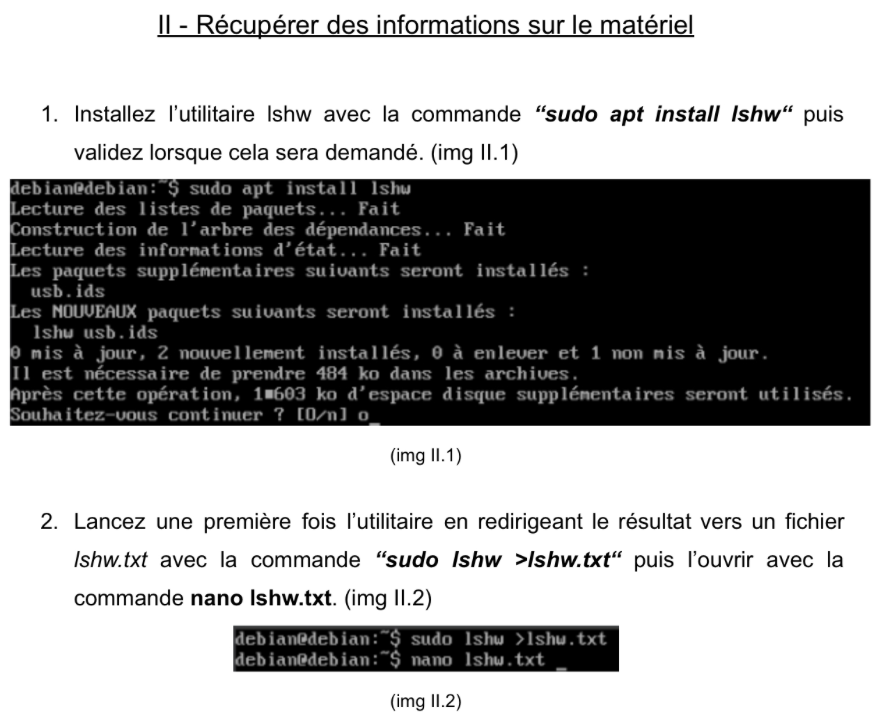
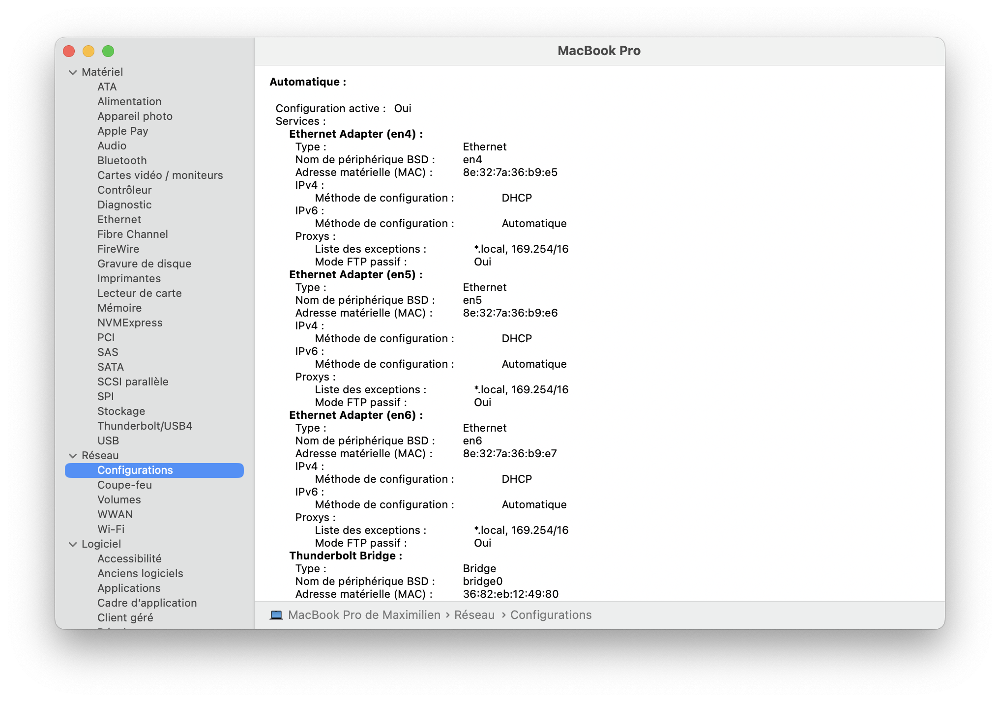
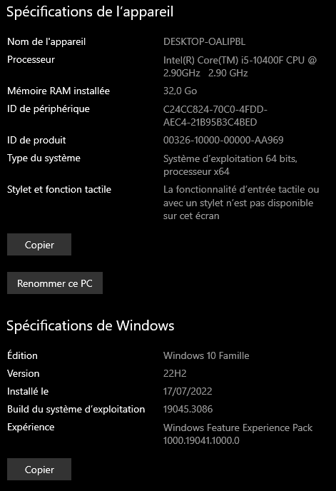
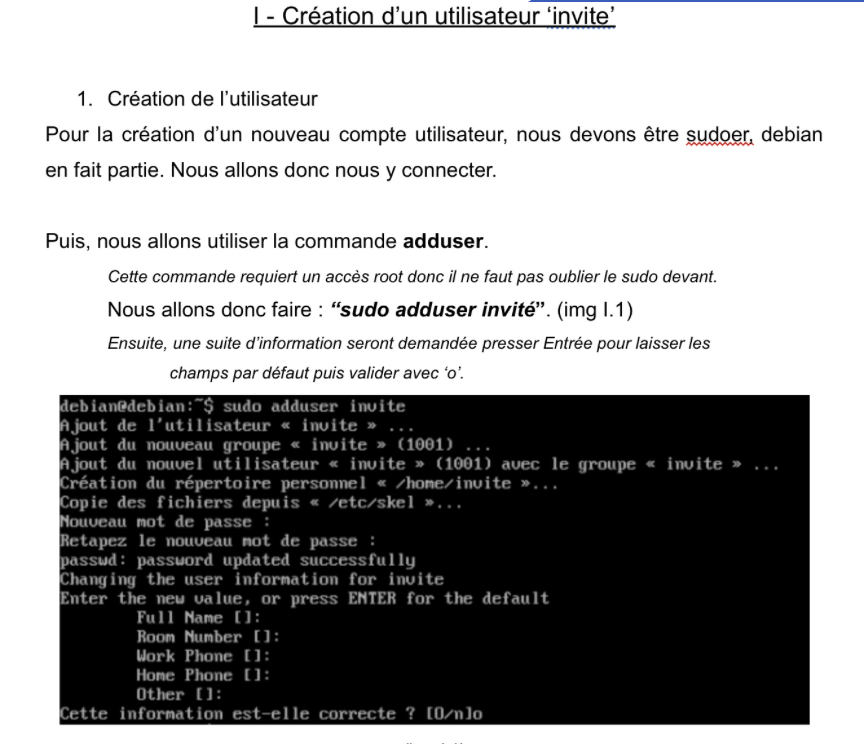
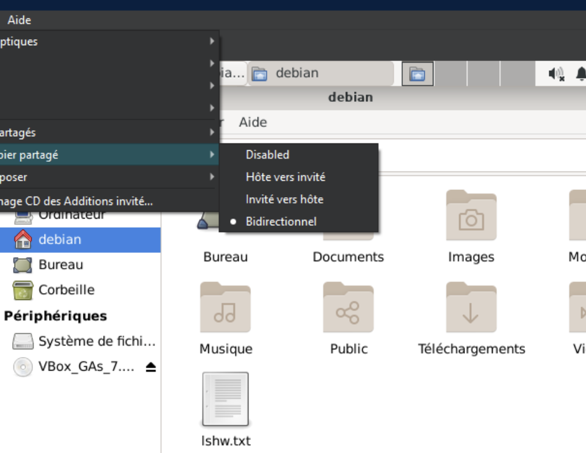
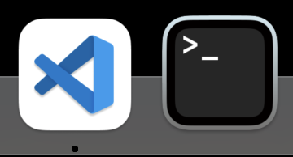
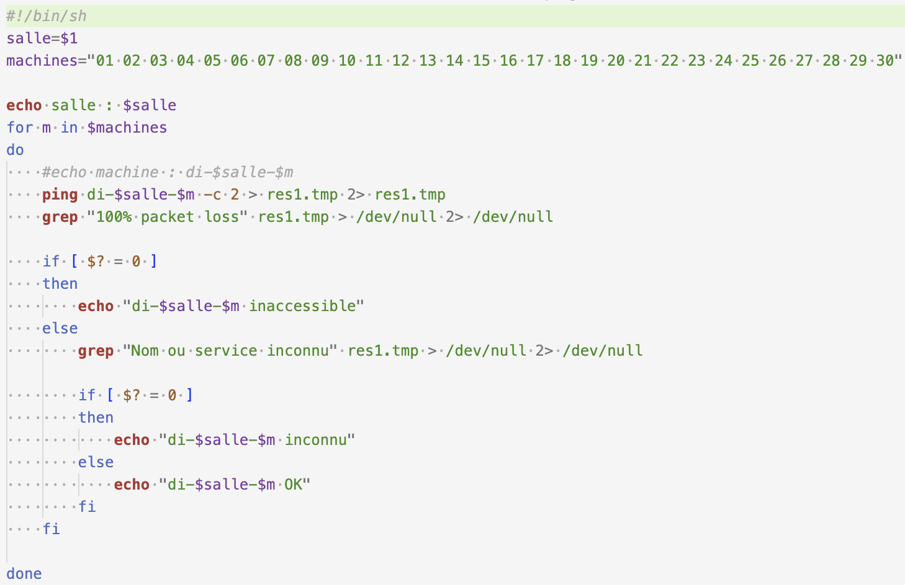
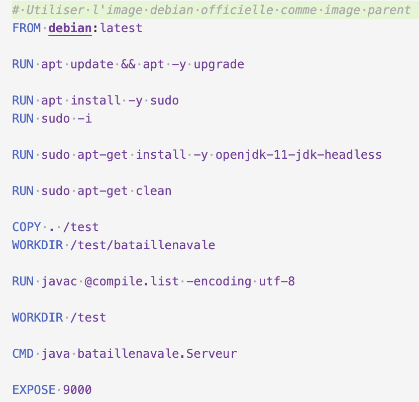
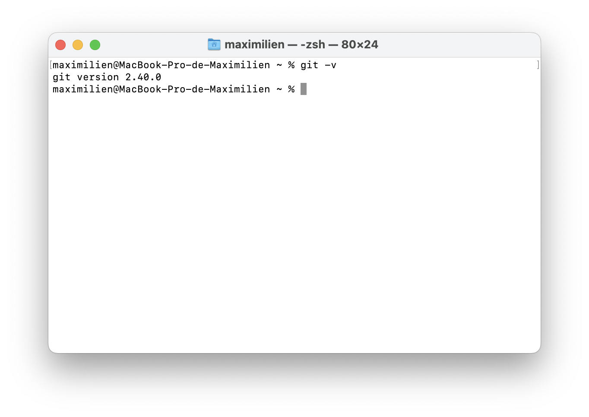

Compétences 3 : Administration des systèmes informatiques communicants complexes
Les composantes ensentielles
- en maîtrisant l’architecture des systèmes et des réseaux
- en sécurisant le système d’information
- en appliquant les obligations légales, les normes en vigueur et les bonnes pratiques
- en appliquant les mesures adaptées à la nature des incidents identifiés en respectant les contraintes de performances, de coûts et d’efficacité énergétique
- en assurant la pérennité des données et des logiciels
Apprentissages critiques - Niveau 1
Identifier les différents composants (matériels et logiciels) d’un système numérique

Identification des composants de la machine virtuelle (SAE 1.03)

Identification des composants réseau MacBook-Pro

Identification de mon système sur mon PC
Utiliser les fonctionnalités de base d’un système multitâches / multiutilisateurs



Configuration de plusieurs utilisateur (SAE 1.03)
Utilisation du multitâches
Sécurisation du système (mot de passe et biométrique)
Installer et configurer un système d’exploitation et des outils de développement

Installation et configuration du système d'explotation Debian sur une Machine Virutelle
Installation d'outils de developpement
Installation de Java
Configurer un poste de travail dans un réseau d’entreprise

Vérification de l'état de la machine sur le réseau
Création d'une image Debian via Docker
Travailler avec l'outil git
Apprentissages critiques - Niveau 2
- Concevoir et développer des applications communicantes Utiliser des serveurs et des services réseaux virtualisés
- Sécuriser les services et données d’un système
- Rédiger une documentation technique (en français et en anglais)